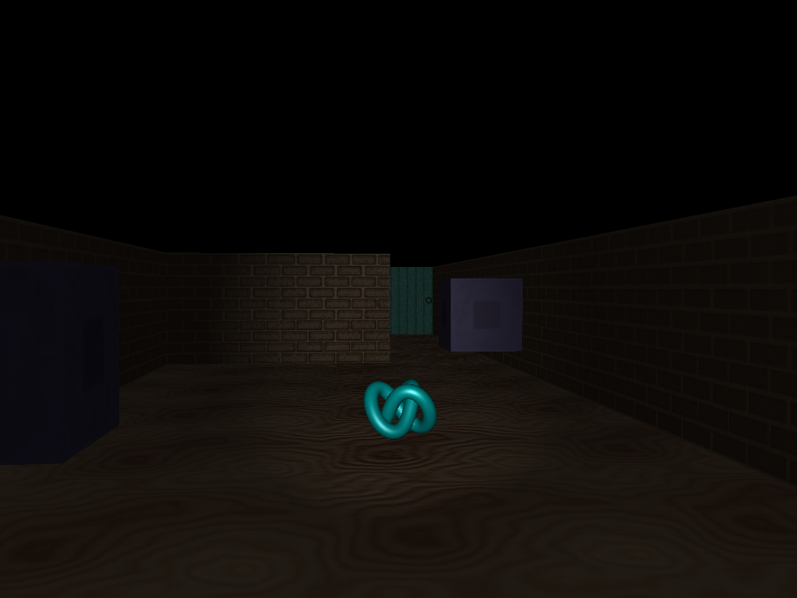
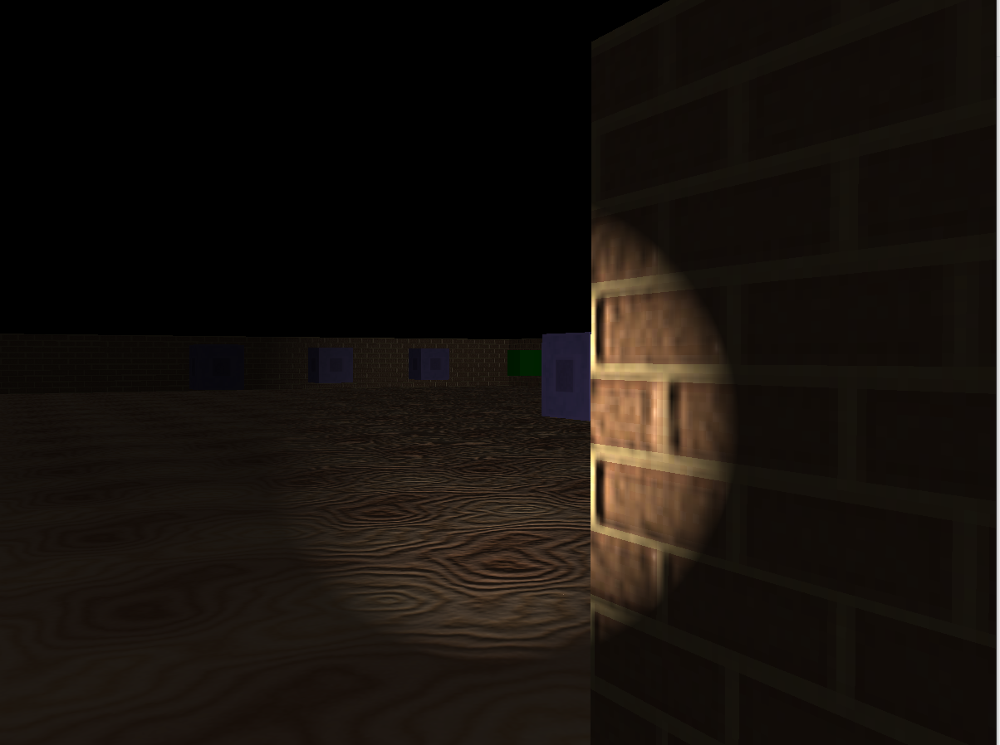
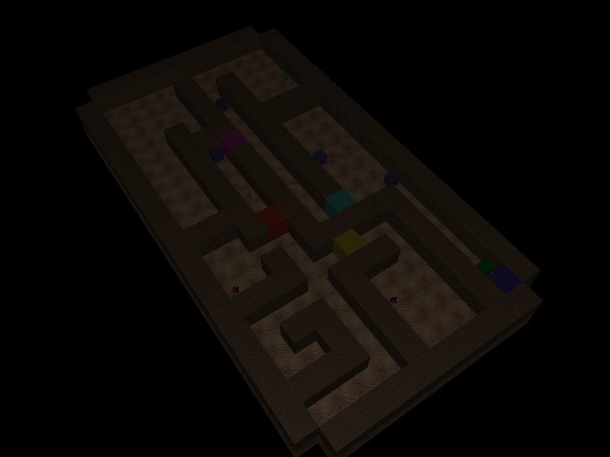
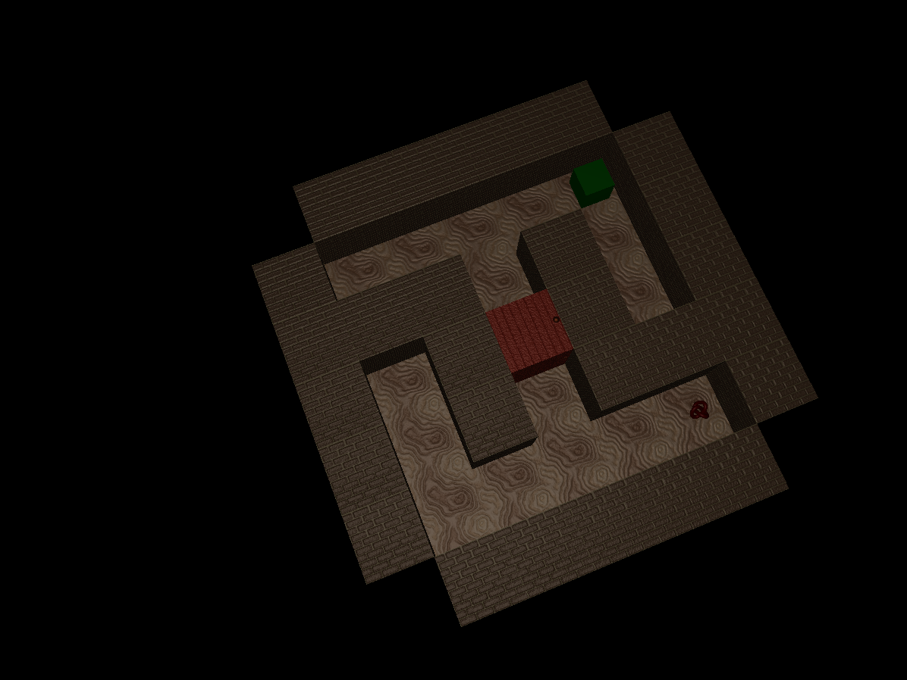
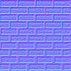
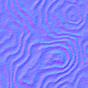
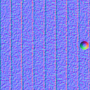

Project 4 Presentation
Files Included
- Proj4-Resources.zip — ZIP: Containing source code, and a working executable. There is also a folder for reference images. Along with all the textures
- Executable OS: Built on Ubuntu 24.04.3 LTS
- Build steps:
g++ -g $(pkg-config --cflags sdl3) main.cpp glad/glad.c -o app $(pkg-config --libs sdl3) -lGL -ldl - Use: run with
./app (or ./app debug)
Images









Description of Video and Images
Features List
Here are the features I implemented for base marks:
Continuous movement showcased in the gameplay gif
Walls and Doors showcased in the gameplay gif
User input using "WASD" and a mouse you can control the character, showcased in the gameplay gif
Collision detection of walls and doors showcased in the gameplay gif
Floor showcased in the images and in the gamplay gif
Ambient and Spotlight lighting showcased in the gif
Multiple maps showcased in the last two images
Walls, Floors, Doors, and Ghosts all have textures
Flashlight
Normal maps on walls, floors, and doors
Here are the Features I would like to contribute to extra credit
Enemies that interact with the environment (damage player)
Shooting the enemies
Images 1, 2, and 3 as submissions to the art contest
Implementation Process
This project has been so fun! I finally got to implement some of the game design features I learn about in my free time, such as tilemapping and pathfinding.
As a general overview I first got a cube rendering, then wrote a function to define the positions of the cubes based on the map file. From there I worked on making the floor. After I had a basic map rendering and simple camera movement, I implemented collisions based on cube postions and a set player size. From there I was able to implement textures. I then implemented doors, and keys which was just like the map but adjusting what happens when you collide.
After getting the base requirements implemented I worked on the flashlight, enemies, shooting, normal maps, and mouse movement. The flashlight was just like implementing the flashlight in the ray tracer. If we are inside the light contribute full lighting otherwise just ambient light. Enemies was similar to doors and keys, but I then had to calculate the distance to the player from each tile using a BFS. Then the enemies march to the next lowest tile every 2 seconds. Shooting was also similar, if we shoot march a ray out in the camera's direction and check what it hits. Normal maps gave me the most trouble, simply because I was forgetting about the tangent and bitangents. After I found resources for that though it was pretty straight forward, make a height map, and then I used an online normal map tool. Mouse movement also gave me a bit of trouble, but in reality my issue was because I was using a trackpad and not a real mouse so when I would press a key I could not move the mouse as well.
As a general overview I first got a cube rendering, then wrote a function to define the positions of the cubes based on the map file. From there I worked on making the floor. After I had a basic map rendering and simple camera movement, I implemented collisions based on cube postions and a set player size. From there I was able to implement textures. I then implemented doors, and keys which was just like the map but adjusting what happens when you collide.
After getting the base requirements implemented I worked on the flashlight, enemies, shooting, normal maps, and mouse movement. The flashlight was just like implementing the flashlight in the ray tracer. If we are inside the light contribute full lighting otherwise just ambient light. Enemies was similar to doors and keys, but I then had to calculate the distance to the player from each tile using a BFS. Then the enemies march to the next lowest tile every 2 seconds. Shooting was also similar, if we shoot march a ray out in the camera's direction and check what it hits. Normal maps gave me the most trouble, simply because I was forgetting about the tangent and bitangents. After I found resources for that though it was pretty straight forward, make a height map, and then I used an online normal map tool. Mouse movement also gave me a bit of trouble, but in reality my issue was because I was using a trackpad and not a real mouse so when I would press a key I could not move the mouse as well.